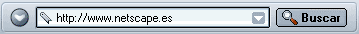
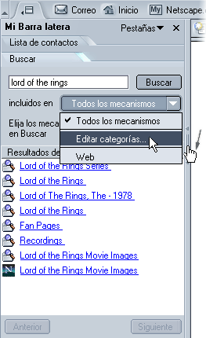
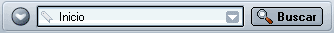
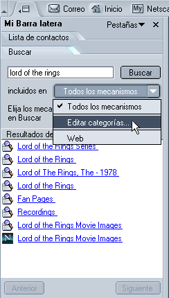

|
|||
| Anterior Siguiente | |||
Bienvenido a Netscape. La navegación por Internet es uno de los usos que la gente da a Netscape con mayor frecuencia. Navigator, el componente de Netscape que permite visitar páginas web, ofrece numerosas formas de visitarlas y de hacer búsquedas en Internet.
En esta sección se presenta Navigator; léala para aprender a navegar y hacer búsquedas por Internet y a guardar páginas web.
|
En esta sección: Navegación por las páginas web Copia, almacenamiento e impresión de páginas |
|
En esta sección: Cómo se visualiza la página de inicio Cómo se hace clic en un enlace Cómo se regresa a una página ya visitada Cómo se detiene la carga de una página y cómo se recarga |
Al iniciar Netscape, verá Navigator, su navegador. Al arrancar por primera vez Netscape, aparece automáticamente la página inicial en la ventana del navegador.
Cuando vuelva a abrir Netscape en ocasiones posteriores, normalmente verá su página de inicio. Suele verse la página de inicio elegida por el administrador de red o por el proveedor de servicios de Internet, o la página de inicio de Netscape, a no ser que elija usted mismo una página de inicio.
Para escoger su propia página de inicio, consulte Cómo se especifica el modo de inicio de Netscape.
Sugerencia:
[ Volver al inicio de la sección ]
Para ir a una página distinta, escriba la URL, es decir, su ubicación (dirección) en la web. Las direcciones URL normalmente empiezan por "http://", seguido por uno o más nombres que identifican la dirección. Por ejemplo "http://netscape.com".
El icono con forma de candado que está en la esquina inferior derecha de la pantalla permite comprobar en cualquier momento el estado de seguridad de la página. Si desea más información, consulte Comprobación de la seguridad de una página web.
Sugerencia: para seleccionar rápidamente la URL de la barra Dirección, pulse Ctrl+L.
|  |
| Barra Dirección
|
¿No conoce la dirección URL? Escriba una parte de una dirección, como "cnn" (para www.cnn.com); o escriba una palabra general, como "regalos" o "flores". Navigator intenta averiguar qué páginas quiere ver o muestra una página con varios enlaces relacionados con la palabra que ha escrito.
Si acaba de entrar en el mundo de Internet, consulte el manual en línea New to the Net Tutorial (Manual breve para novatos de Internet).
[ Volver al inicio de la sección ]
La mayoría de las páginas web contienen enlaces donde puede hacer clic para ir a otras páginas.
[ Volver al inicio de la sección ]
Existen varios métodos para volver a visitar las páginas que ya ha visto:
| |
|||
| Anterior Siguiente | |||
| Barra Dirección |
Sugerencia: la pestaña Historial de Mi Barra lateral también permite seleccionar las páginas visitadas durante las últimas sesiones. Si desea más información, consulte Cómo se agrega una pestaña a Mi Barra lateral.
El historial contiene enlaces a páginas visitadas recientemente. La lista de la barra Dirección contiene enlaces a páginas cuyas URL escribió en dicha barra para visitarlas.
Para acceder al historial desde Navigator, abra el menú Ir y seleccione Historial. Para acceder a la lista de la barra Dirección, haga clic en la flecha que está en el extremo derecho de la barra Dirección.
Sugerencia: para abrir rápidamente el historial, pulse Ctrl+H.
Si no quiere que la barra Dirección o el historial muestren las páginas que ha visitado, puede borrar totalmente o de forma selectiva la lista del historial y el historial de la barra Dirección.
Para borrar todas las páginas de la barra Dirección o del historial, comience desde la ventana Navigator:
Para suprimir páginas de forma selectiva del historial, haga lo siguiente:
Sugerencia: para ordenar el historial, haga clic en una de las categorías (Título, Ubicación o Última visitada). Haga clic de nuevo para invertir el orden.
[ Volver al inicio de la sección ]
Si una página tarda demasiado en aparecer o si cambia de idea y ya no quiere verla, haga clic en el botón Parar.
Para recargar la página que esté viendo o para obtener la versión más actualizada, haga clic en el botón Volver a cargar o pulse Ctrl+Mayús+R (Cmd+Mayús+R en Mac OS).
|
|
|||
|
Volver a cargar
|
Parar
|
||
[ Volver al inicio de la sección ]
Las direcciones, o URL, de páginas web a veces son largas y difíciles de recordar. Afortunadamente, no es necesario aprenderse de memoria las URL para navegar por la web. Su navegador tiene una lista de marcadores que lo llevan a las páginas web más interesantes.
Para ir a una página marcada, empiece en la ventana Navigator:
Sugerencia: para volver atrás, haga clic en la flecha Anterior.
Guarde sus propios marcadores para ir a las páginas que visita con mayor frecuencia o a otros lugares interesantes de Internet. Si desea más información, consulte Cómo se crea un marcador.
[ Volver al inicio de la sección ]
Cuando visite más de una página web al mismo tiempo, use la navegación con pestañas para navegar de un modo más rápido y sencillo.
La navegación con pestañas permite abrir pestañas, cada una con una página web, dentro de una sola ventana de Navigator. No hace falta abrir varias ventanas para visitar varias páginas web. De esta forma dispondrá de más espacio en el escritorio. Abra, cierre y recargue páginas web cómodamente en un solo lugar, sin necesidad de cambiar de una ventana a otra.
Gestione las pestañas de navegación fácilmente y controle la apertura automática de pestañas. Si desea más información sobre la navegación con pestañas, consulte Preferencias de Navigator: navegación con pestañas.
Para aprender a usar la navegación con pestañas, consulte Exploración con pestañas.
[ Volver al inicio de la sección ]
Además de navegar por la web con Navigator, también puede dejar que la web venga a visitarlo a usted con ayuda de Mi Barra lateral.
Mi Barra lateral es un marco personalizable del navegador en el que podrá mantener todos los elementos que necesite usar en cualquier momento, como las últimas noticias y el tiempo, el libro de direcciones o la Lista de contactos, los índices bursátiles y una agenda, entre muchas más opciones. Mi Barra lateral presenta estos elementos en pestañas que se actualizan continuamente.
Netscape incorpora algunas de la pestañas de Mi Barra lateral preestablecidas, pero puede personalizarla agregando, eliminando y reorganizando las pestañas. Si desea más información, consulte Mi Barra lateral.
Para ver un elemento de Mi Barra lateral, haga clic en la pestaña correspondiente.
|  |
Selector de Mi Barra lateral |
Si aún no está abierta Mi Barra lateral, ábrala haciendo clic en el selector. Si no hay selector, abra el menú Ver de Navigator, elija Mostrar/ocultar, y luego seleccione Mi Barra lateral en el submenú. |
[ Volver al inicio de la sección ]
Hay tres formas de realizar una búsqueda rápida: desde la barra Dirección, desde Mi Barra lateral y desde la página Buscar en la red.
Buscar páginas web sobre un tema determinado resulta tan fácil como escribir una palabra o dos en la barra Dirección del navegador, tal como se ilustra a continuación.

Por ejemplo, si desea encontrar información sobre muñecas:
Después de realizar una búsqueda, los resultados se guardarán en la pestaña Buscar de Mi Barra lateral hasta la nueva búsqueda. No es necesario que vuelva a hacer clic en el botón Anterior para recuperar los resultados de la búsqueda.
Nota: también puede usar palabras clave de Internet para realizar búsquedas desde la barra Dirección.
La pestaña Buscar de Mi Barra lateral le permite buscar rápidamente y marcar los resultados de la búsqueda. Por ejemplo, si quiere encontrar información sobre coches de juguete:
Nota: si la pestaña Buscar de Mi Barra lateral contiene una lista de buscadores entre los que elegir, es que está configurado en modo avanzado; de ser así, tendrá que elegir uno o varios buscadores antes de hacer clic en buscar. Puede dejarla así o ir a Preferencias y cambiarla a la configuración básica.
Sugerencia: Para mostrar rápidamente la página siguiente o anterior de resultados de la búsqueda, haga clic en los botones Siguiente y Anterior que están en la parte inferior de la pestaña Buscar de Mi Barra lateral.
La página Buscar en la web le permite escribir un término o frase de búsqueda o explorar varias categorías (como Artes, Recreación, Negocios y muchas otras) que le puedan interesar. Para visitar la página Buscar en la web, realice una de las siguientes acciones:
Netscape permite buscar palabras seleccionadas dentro de una página web:
Netscape abrirá una ventana nueva y usará el buscador predeterminado para buscar las palabras seleccionadas. Para aprender a cambiar el buscador que se usará para buscar las palabras seleccionadas, consulte Preferencias de Navigator: buscar en Internet.
[ Volver al inicio de la sección ]
Puede establecer la pestaña Buscar de Mi Barra lateral en modo Avanzado; así, efectuará búsquedas más exactas y podrá escoger uno o más buscadores.

Tal vez desee especificar qué buscadores deben utilizarse para las distintas categorías de búsqueda. Puede seleccionar, por ejemplo, un grupo de buscadores para buscar viajes y otro grupo de buscadores para software.
[ Volver al inicio de la sección ]
De forma predeterminada, se usa el buscador Netscape Search. Si quiere, elija otro buscador como predeterminado. También puede especificar cómo quiere que se muestren los resultados de la búsqueda en Mi Barra lateral.
[ Volver al inicio de la sección ]
Las palabras clave de Internet se combinan con la barra Dirección para ayudarlo a encontrar rápidamente tipos determinados de información. Existen varias maneras de utilizar palabras clave de Internet:
Consejo: las palabras clave de Internet más utilizadas se relacionan en la lista desplegable que está a la izquierda de la barra Dirección. Haga clic en el triángulo y elija una palabra de la lista. Para ver una lista más larga de palabras clave, elija Lista de palabras clave.
Importante: para usar las palabras clave de Internet, pulse la tecla Entrar (Retorno en Mac OS) en lugar de hacer clic en el botón Buscar. Si pulsa Entrar, activa la función de palabras claves; si hace clic en Buscar inicia una búsqueda.
Para ver la diferencia, seleccione una opción:
Si escribe las palabras clave de Internet en la barra Dirección y no le funciona, compruebe las preferencias de navegación inteligente para asegurarse de que la función palabras clave de Internet (Internet keywords) está activada.
Para ver las acciones actualizadas en bolsa de una compañía, escriba "acciones" y a continuación la denominación abreviada del valor de las acciones de la compañía y pulse Entrar.
Si no conoce dicho símbolo, escriba el nombre de la compañía. La página Acciones mostrará la lista de todas las compañías con nombres similares; elija aquella cuyo valor en bolsa desee conocer.
[ Volver al inicio de la sección ]
Para buscar texto dentro de la página que está viendo con Navigator:
Para buscar la misma palabra o frase otra vez:
[ Volver al inicio de la sección ]
Para buscar en los marcadores, comience en la ventana Navigator:
Sugerencia: para abrir rápidamente el menú Marcadores, pulse Ctrl+B.
Para buscar en el historial:
Para utilizar los resultados de la búsqueda:
Sugerencia:
[ Volver al inicio de la sección ]
|
En esta sección: Cómo se copia un fragmento de una página |
Para copiar texto de una página, empiece en la ventana Navigator:
Puede pegar el texto en otros programas.
Para copiar un enlace (URL) o una imagen con enlace de una página:
Pegue el enlace en otros programas o en la barra Dirección de Navigator.
[ Volver al inicio de la sección ]
Para guardar una página completa, comience en la ventana Navigator:
Cuando se visita una página que contiene marcos y hay un marco seleccionado en ese momento, en la lista desplegable aparece la opción Guardar marco como, además de la opción Guardar página como. Esto le permite guardar sólo la página que se encuentra dentro del marco seleccionado.
Si guarda un archivo en el disco duro, podrá ver la página (o su código HTML) sin estar conectado a Internet.
Para guardar una imagen de una página:
Para guardar una página sin verla (útil para recuperar una página sin formato, como un archivo de datos, que no está pensado para ser mostrado):
Importante: algunos enlaces descargan y guardan archivos en el disco automáticamente después de hacer clic sobre ellos. Los URL de estos enlaces a menudo empiezan por "ftp" o terminan con la extensión del tipo de archivo, como "au" o "mpeg". Estos enlaces pueden transmitir software, sonido o animaciones y pueden iniciar aplicaciones auxiliares que admitan los archivos.
Sugerencia: para establecer una imagen como tapiz en el escritorio de Windows, haga clic con el botón derecho sobre la imagen y elija Definir como papel tapiz en el menú emergente.
[ Volver al inicio de la sección ]
Para imprimir la página que está visitando, comience en la ventana Navigator:
Para imprimir texto seleccionado, comience en la ventana Navigator:
El tamaño de la página impresa, y no el tamaño de la ventana que se ve en pantalla, determinará la colocación del contenido en la página impresa. El texto se ajusta y los gráficos se reorganizan para adaptarlos al tamaño del papel.
Para hacerse una idea sobre el aspecto que tendrá la página antes de imprimirla, vea cómo quedará en la vista preliminar. Comience en la ventana Navigator:
Abra el menú Archivo y seleccione Imprimir Vista preliminar.
En la pantalla de vista preliminar, puede hacer lo siguiente con las páginas que desee imprimir:
 , Anterior
, Anterior  , Primero
, Primero  , Último
, Último  para desplazarse de una página a otra.
para desplazarse de una página a otra.Nota: algunas funciones de vista preliminar de impresión son diferentes (o inexistentes) para Mac OS y Linux.
Nota: algunas funciones de vista configuración de página son diferentes (o inexistentes) para Mac OS y Linux.
Para personalizar la impresión de páginas en Netscape, vaya a Configuración de página:
Desde Navigator, abra el menú Archivo y seleccione Configurar página.
En la pantalla Configuración de página, puede hacer lo siguiente para las páginas que desee imprimir:
Sugerencia: para obtener una vista preliminar de los cambios efectuados en Configuración de página, vaya a Imprimir Vista preliminar.
[ Volver al inicio de la sección ]
Print plus es un servicio que lo ayudará a:
Para utilizar este servicio, abra el menú Archivo, haga clic en Print plus y después seleccione Central de impresión, Suministros de impresora o Servicios de impresión.
Nota: Print plus incluye una utilidad que comprueba automáticamente el tipo de impresoras configuradas en su equipo. La información sobre sus impresoras se almacena en su equipo en un cookie. Antes de obtener esta información se le pedirá permiso siempre.
[ Volver al inicio de la sección ]
|
En esta sección: Cómo se elige una fuente o una codificación de caracteres |
Si navega, redacta o envía y recibe mensajes electrónicos en más de un idioma, es posible que necesite seleccionar las fuentes y las codificaciones de caracteres apropiadas.
Un método de codificación de caracteres es la forma en que se ha convertido el documento o mensaje en datos que el ordenador puede utilizar. Todos los documentos web y los mensajes de correo o noticias utilizan un método de codificación de caracteres (también llamado codificación de caracteres o juego de caracteres).
El método de codificación de caracteres de un documento depende del idioma. Algunos idiomas, como la mayoría de las lenguas occidentales, comparten el mismo método de codificación. Otros, como el chino, el japonés y el ruso, utilizan métodos diferentes.
Su versión de Netscape tiene configurada de forma predeterminada la codificación de caracteres propia de su zona. Sin embargo, si utiliza más de un idioma, es posible que tenga que seleccionar los métodos adecuados de codificación de caracteres y designar las fuentes que desea utilizar para su método de codificación.
Para seleccionar una codificación de caracteres, comience en la ventana Navigator:
Los métodos de codificación de caracteres que ha seleccionado se agregan al menú Codificación de caracteres. Si ha seleccionado más de un método de codificación, el que esté activo estará marcado con un punto.
Netscape detecta la codificación de caracteres utiliza un documento y lo muestra correctamente en la pantalla. Para activar esta función, comience en la ventana Navigator:
Para realizar cambios en la lista de los juegos de caracteres activos:
Para cambiar las fuentes predeterminadas dentro de un grupo de idioma:
Muchos creadores de páginas web eligen la fuente y el tamaño. Para usar la configuración de fuentes del autor, seleccione Permitir que los documentos utilicen otras fuentes.
Para ajustar la legibilidad de las fuentes, seleccione los puntos por pulgada (dpi) para la visualización de páginas web en la lista desplegable. Seleccione Otra para abrir el cuadro de diálogo Calibrar resolución; la resolución se calibra estableciendo la longitud que aparentan las líneas en pantalla.
[ Volver al inicio de la sección ]
El idioma que utilice para Netscape afecta al texto de los botones, los cuadros de diálogo, los menús, las herramientas y demás elementos. Las funciones de los elementos no cambian.
Para establecer el idioma preferido:
Nota: después de cambiar el idioma preferido, debe reiniciar Netscape.
El paquete de contenido que utiliza afecta a la página de inicio, los marcadores, los contenidos de las barras de herramientas, Mi Barra lateral y demás elementos.
Para utilizar un paquete de contenido:
Nota: tendrá que reiniciar Netscape después de cambiar a otro paquete de contenido.
Sugerencia: para descargar más paquetes de contenido para Netscape, haga clic en Descargar más.
A veces, algunas páginas web están disponibles en varios idiomas. Netscape presenta las páginas en el idioma que usted prefiera, si es posible. Puede especificar el idioma que desea ver por orden de preferencia.
Para fijar las prioridades de idioma:
Nota: entre paréntesis, al lado de cada idioma de la lista, se indican los códigos de dos letras. Se trata de abreviaciones normalizadas para los idiomas. Si desea ver una lista completa, consulte en Internet el documento Codes for the Representation of Names of Languages (Códigos de representación de nombres de idiomas).
[ Volver al inicio de la sección ]
Si desea información sobre Netscape en varios idiomas, consulte en Internet el documento International Users Page (Página de usuarios internacionales).
[ Volver al inicio de la sección ]
Navigator puede trabajar con muchos tipos de archivos. Sin embargo, para gestionar algunos archivos —como los de películas o música—, Navigator necesita conectores o aplicaciones auxiliares. Si Netscape no tiene las aplicaciones auxiliares o los conectores necesarios, puede guardar el archivo en el disco duro. Efectúe un seguimiento de los archivos que guarde con el Gestor de descargas.
Los conectores son aplicaciones auxiliares que amplían las funciones de Navigator y que funcionan dentro de Netscape. Los conectores como Sun Java, Macromedia Flash y RealNetworks RealPlayer permiten a Netscape mostrar archivos multimedia y ejecutar pequeñas aplicaciones, como películas, animaciones y juegos.
Al instalar Netscape, se le brindó la oportunidad de agregar algunos de los conectores más conocidos. No hace falta que los instale por separado. No obstante, también se pueden instalar conectores después de instalar Netscape. Para ver los conectores de Netscape instalados, visite la página web Netscape Plug-in Manager (Gestor de conectores de Netscape).
Para consultar una lista completa de los conectores de Netscape que puede instalar, vea la página Browser Plug-ins (Conectores del navegador) de Netscape.
Cuando los archivos no pueden abrirse dentro de Netscape, puede iniciar aplicaciones auxiliares que se abren fuera de Netscape. Por ejemplo, para reproducir archivos MP3, puede abrir programas como Winamp desde fuera de Netscape.
La configuración del panel de preferencias de aplicaciones auxiliares determina qué aplicaciones de este tipo se utilizarán en su equipo. Normalmente, no hace falta cambiar estas preferencias, ya que están preconfiguradas. Además, si Navigator no sabe qué aplicación auxiliar debe utilizar, le permite buscar una en el cuadro de diálogo de descarga.
El cuadro de diálogo de descarga tiene las siguientes opciones:
Sugerencia: Se pueden eliminar las opciones guardadas para Preguntar siempre antes de abrir este tipo de archivos. Si desea más información, consulte Preferencias de Navigator: aplicaciones auxiliares.
Para los usuarios experimentados que deseen definir las preferencias de aplicaciones:
Para agregar una nueva aplicación auxiliar a la lista:
Para especificar el modo en que Navigator gestionará los archivos descargados:
Para eliminar un elemento de la lista:
Si desea más información sobre las preferencias de las aplicaciones auxiliares, consulte Preferencias de Navigator: aplicaciones auxiliares.
Haga un seguimiento de los archivos que descarga con el Gestor de descargas. El Gestor de descargas muestra la información siguiente:
Para abrir el Gestor de descargas, haga lo siguiente:
El Gestor de descargas presenta las siguientes opciones de menú:
[ Volver al inicio de la sección ]
Nota: en esta sección se comentan valores y funciones exclusivos de Windows.
Netscape es conocido, sobre todo, por mostrar páginas web, tanto en Internet como en su equipo. Para abrir las páginas web fácilmente, establezca Netscape como su navegador predeterminado.
Al establecer Netscape como navegador predeterminado, le permitirá abrir automáticamente formatos de archivo y protocolos de uso común en Internet. Entre los formatos de archivo y los protocolos comunes de Internet, están los siguientes:
Archivos de imagen:
JPEG, GIF, PNG, y MNG
Archivos de documentos y lenguajes de Internet:
HTML, XML, XHTML y XUL
Protocolos de Internet:
HTTP, HTTPS, FTP, Chrome, Gopher
Al terminar la instalación, Netscape comprueba si es el navegador predeterminado para algún formato de archivo o protocolo común de Internet. Si no es así, el programa le informará de que Netscape no es el navegador predeterminado y le preguntará si desea que lo sea a partir de ese momento.
Haga clic en Sí para que Netscape sea el navegador predeterminado. Si hace clic en No, se le hará la misma pregunta cada vez que se abra Netscape, a no ser que desactive la opción La próxima vez, realice la comprobación durante el inicio también.
Si desactiva dicha opción, aún puede establecer Netscape como navegador predeterminado; para ello, cambie la configuración en Preferencias. Si desea a aprender a establecer Netscape como su navegador predeterminado en las preferencias de Netscape, consulte Preferencias de Navigator: Navigator.
Es posible personalizar el modo en que Netscape manipula los distintos formatos de archivos y los protocolos. Si desea más información, consulte Preferencias avanzadas: sistema.
[ Volver al inicio de la sección ]
Cuando abre una página web en la pantalla, Netscape carga (inicia) automáticamente varios elementos que ayudan a interpretar las páginas web. Estos elementos, Java y JavaScript, hacen que las páginas web sean más atractivas, pero tardan bastante en cargarse.
Si desea aprender a desactivar Java, consulte Preferencias avanzadas: avanzadas.
Si desea aprender a desactivar JavaScript, consulte Preferencias avanzadas: secuencias de comandos y Windows.
[ Volver al inicio de la sección ]
El sistema almacena copias de las páginas a las que se accede con más frecuencia en el caché de memoria o en el caché de disco. De este modo, el sistema no tiene que recuperar la página de la red cada vez que quiere verla.
Para establecer el tamaño del caché de memoria o para vaciarlo (sólo Windows y Unix)
Importante: un caché de memoria superior permite recuperar con rapidez una mayor cantidad de datos. Sin embargo, si no dispone de una gran cantidad de memoria de sobra en el sistema, 1.024 kB es un tamaño suficientemente grande.
Para establecer el tamaño del caché de disco o para vaciarlo:
Importante: un caché de disco superior permite recuperar con rapidez más páginas, pero se utiliza más espacio de disco duro.
Al salir de Netscape, éste realiza el mantenimiento del caché. Si el mantenimiento tarda más de lo deseado, pruebe a reducir el tamaño del caché de disco.
Para especificar la frecuencia con la que Navigator debe comprobar en la red si hay revisiones de las páginas (de modo que no conserve páginas obsoletas en el caché demasiado tiempo):
Si las páginas que deberían estar en el caché tardan demasiado tiempo en aparecer, asegúrese de que la preferencia escogida no es Cada vez que veo la página, porque la comprobación requiere una conexión de red que necesita tiempo.
Para actualizar una página en cualquier momento:
[ Volver al inicio de la sección ]
Netscape puede notificarle si las actualizaciones de su software están disponibles y puede instalar dichas actualizaciones automáticamente. Netscape también lo informará cuando salga una nueva versión de Netscape.
Si desea información sobre la instalación automática de software, consulte Preferencias avanzadas: instalación de software.
[ Volver al inicio de la sección ]
Si su ratón tiene rueda, puede configurar el funcionamiento de dicha rueda en Netscape.
Si desea más información sobre la configuración de la rueda del ratón, consulte Preferencias avanzadas: rueda del ratón.
[ Volver al inicio de la sección ]
Nota: Quick Launch sólo está disponible en las instalaciones de Netscape en sistemas Windows.
Quick Launch acorta el tiempo necesario para que inicie Netscape. Cuando Netscape utiliza Quick Launch, el icono del logotipo de Netscape está presente en la barra de tareas (junto al reloj).
| |
| Icono Quick Launch de Netscape
|
Sugerencia: Para iniciar rápidamente componentes (como Composer, correo y grupos de noticias y el Libro de direcciones), haga clic con el botón derecho en el icono del logotipo de Netscape y seleccione el componente del menú emergente.
Al instalar Netscape, se le ofreció la oportunidad de activar o desactivar Quick Launch. Si está activado, Quick Launch carga parte de Netscape en la memoria al iniciar Windows (y cada vez que se abre Netscape). Quick Launch permite que Netscape se quede en la memoria después de cerrar todas las ventanas de Netscape. De esta forma, Netscape se abre rápidamente cuando lo necesita, sin tener que cargar Netscape por completo. Si su equipo no dispone de mucha memoria, puede desactivar Quick Launch para ahorrar memoria.
Para activar o desactivar Quick Launch en Netscape:
Sugerencia: Para desactivar Quick Launch rápidamente, haga clic con el botón derecho en el logotipo de Netscape de la bandeja del sistema (junto al reloj) y seleccione Desactivar Quick Launch en el menú emergente.
[ Volver al inicio de la sección ]
|
En esta sección: |
En esta sección se explica cómo se trabaja con servidores proxy.
Muchas empresas bloquean el acceso desde Internet a sus redes. Esto impide que las personas ajenas a la empresa obtengan acceso a información confidencial. Esta protección recibe el nombre de cortafuegos.
Si su empresa dispone de un cortafuegos, es posible que el navegador tenga que pasar por un servidor proxy antes de conectarse a Internet. El servidor proxy evita que los intrusos se introduzcan en la red privada de una empresa.
Antes de empezar:
Para configurar el navegador para que funcione con el servidor proxy:
Los nombres del dominio son la parte de un URL que contiene el nombre de una organización, empresa o institución docente, por ejemplo, netscape.com o washington.org. Si utiliza nombres de sistemas principales locales sin el nombre de dominio, especifíquelos de la misma manera. Utilice comas para separar varios nombres de sistemas principales. No se admite el carácter comodín [*].
Si desea más información sobre el panel de preferencias del proxy, consulte Preferencias avanzadas: proxies.
[ Volver al inicio de la sección ]
20 de junio del 2002
Copyright © 1994–2002 Netscape Communications Corporation.